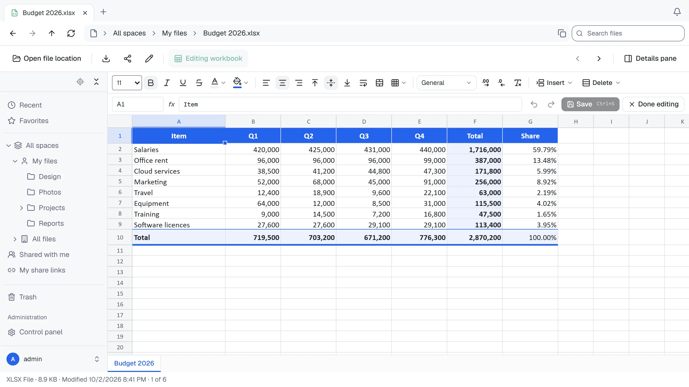

预览与编辑
大多数文件可直接在浏览器中打开，无需安装其他软件。
浏览器可打开的格式
| 类型 | 查看 | 编辑 |
|---|---|---|
| 图片（.jpg、.png、.gif、.webp、.avif、.svg、.bmp、.ico） | 支持 | |
| 视频（.mp4、.webm、.mov） | 支持 | |
| 音频（.mp3、.wav、.ogg、.flac、.aac、.m4a） | 支持 | |
| 支持 | ||
| Word（.docx） | 支持 | |
| PowerPoint（.pptx） | 支持 | |
| Excel（.xlsx） | 支持 | 支持 |
| Markdown（.md） | 支持，显示为排版页面 | 支持 |
| 文本与代码，包括 HTML 和 XML（仅作为文本显示，不作为网页执行） | 支持 | 支持 |
双击文件即可在标签页中打开。按 ← 或 →，或点击工具栏右侧箭头，可前往同一文件夹的上一个或下一个文件。顺序与文件夹排序一致；整个文件夹载入完成后，状态栏显示当前位置（例如第 3 个，共 12 个）。正在输入文件内容，或焦点位于视频控件时，方向键保留原有用途；请先点击控件外部。
超过 5 MB 的文本与代码文件，以及超过 50 MB 的 Word、PowerPoint 和 Excel 文件，无法在浏览器中打开，请下载后使用。
大多数浏览器无法显示 HEIC、TIFF、Photoshop 图片，AVI、MKV、WMV、FLV 视频，或 WMA、AIFF 音频，因此这些格式会显示下载按钮。浏览器无法播放某个具体的视频或音频文件时也会这样处理。
编辑 Excel 工作簿
打开工作簿，点击编辑工作簿。

- 在单元格或编辑栏中输入，公式以
=开头。 - 需要逐一扫描数百万单元格的公式，例如覆盖大部分工作表的
COUNTIF，会显示#CALC!，避免页面卡顿。保存时保留 Excel 已存储的结果，Excel 打开文件后会重新计算。 - 工具栏提供粗体、颜色、边框、对齐、数字格式和合并单元格。日期中的月份、星期和 AM/PM 按 ThirtyFile 的当前语言显示，除非单元格格式另行指定语言。函数名称保持英文，因为 Excel 在文件中以英文保存。
- 可以在单元格之间复制粘贴，也可以与电脑上的 Excel 互相复制粘贴。
- 剪切会在同一工作簿内移动单元格。将剪切内容粘贴到另一个工作簿时，会复制值、公式和格式，保留源单元格。同一工作簿内的移动可撤销。
- 每次复制、粘贴或填充最多支持 100,000 个单元格和约 800 万个剪贴板字符。超出工作表边界的粘贴会在修改任何单元格之前被拒绝。清除大的稀疏选择时，仅处理有内容的单元格，最多更改 100,000 个；更大的操作需拆成较小选择。
- 在编辑栏和名称框中，输入法用于选择或取消候选词的 Enter 和 Escape 会保留输入法行为。完成输入后，再按 Enter 才会提交值或跳转。
- 可从插入和删除菜单增删行列，公式会自动调整。
- 按 Ctrl + Z 撤销，按 Ctrl + S 保存。最多可撤销 200 步，其中行列插入和删除最多保留 20 步。
- 使用屏幕阅读器时，可用方向键移动，系统会读出目标单元格的地址与值，或选中范围。
仅查看工作簿时，屏幕阅读器可以在工作表后面的表格中读取当前屏幕显示的单元格。用方向键滚动工作表时，表格内容也会随之更新。
保存仅修改你编辑过的单元格，图表、图片和工作簿中其他内容保持原样。
编辑文本文件
文本与代码文件会在编辑器中打开，支持大多数编程语言的语法高亮。按 Ctrl + S 保存。
保存尚未完成时切换标签页，各文件的修改仍独立保存。开始保存后输入的文字在保存完成时仍属于未保存内容，请再次保存。丢弃草稿后，即使较早的保存请求完成，也不会恢复该草稿。
ThirtyFile 无法识别的文件，例如 Dockerfile、README 或不常见扩展名文件，会显示无法预览此文件类型。如果内容是文本，可点击在文本编辑器中打开进行阅读和编辑。这不会重命名文件或修改类型；只有主动保存才会写入。默认视图可切回原视图，未保存的修改会保留，再次打开编辑器时恢复。
- 只有拥有修改文件的权限时才能保存。分享链接仅在允许下载时显示此按钮，文本为只读。
- 不像文本的文件（程序或扩展名异常的图片）会以只读方式打开，避免保存损坏文件。编辑器不能原样写回的文本编码也采用只读方式。UTF-8、UTF-16 编码和 Windows 换行保留不变。Big5 可以读取，但保存时会转换为 UTF-8，编辑器会事先提示；仅打开不会修改存储文件。
- 超过 5 MB 的文件无法在编辑器中打开，请改为下载。
Markdown
Markdown 文件以排版页面显示，包括标题、列表、表格、任务列表和代码。点击页面上方编辑修改文本（只有查看权限时显示源代码），再切回预览查看结果，未保存的修改也会显示。
页面采用安全显示方式：文件内的 HTML 不会执行，也不能伪装成 ThirtyFile 界面；链接在新标签页打开，只显示嵌入文件本身的图片。外部网站图片不会载入，因此打开文件不会向这些网站透露访问情况。
缩略图
在图标视图（大图标、中等图标和平铺）中，图片、PDF 和视频会显示缩略图。图片缩略图由服务器生成。PDF（第一页）和视频（靠近开头的一帧）的缩略图由第一位具有修改权限的用户浏览器生成并保存到服务器，之后同空间内可打开文件的人都能看到。在此之前，只能查看的人会在自己的浏览器中生成缩略图。浏览器不能播放的视频，以及超过 200 MB 的 PDF，保留原图标。缩略图保存在 data/thumbs：内容存储区的文件内容被永久删除后，其缩略图一并删除；30 天内未向任何人展示的缩略图也会删除（再次查看文件时重新生成）。
两人编辑同一文件时
如果你编辑期间其他人已保存该文件，你的保存会停止并显示提示，避免在无通知的情况下覆盖他人的工作。请复制自己的修改，重新载入文件，再加入这些修改。